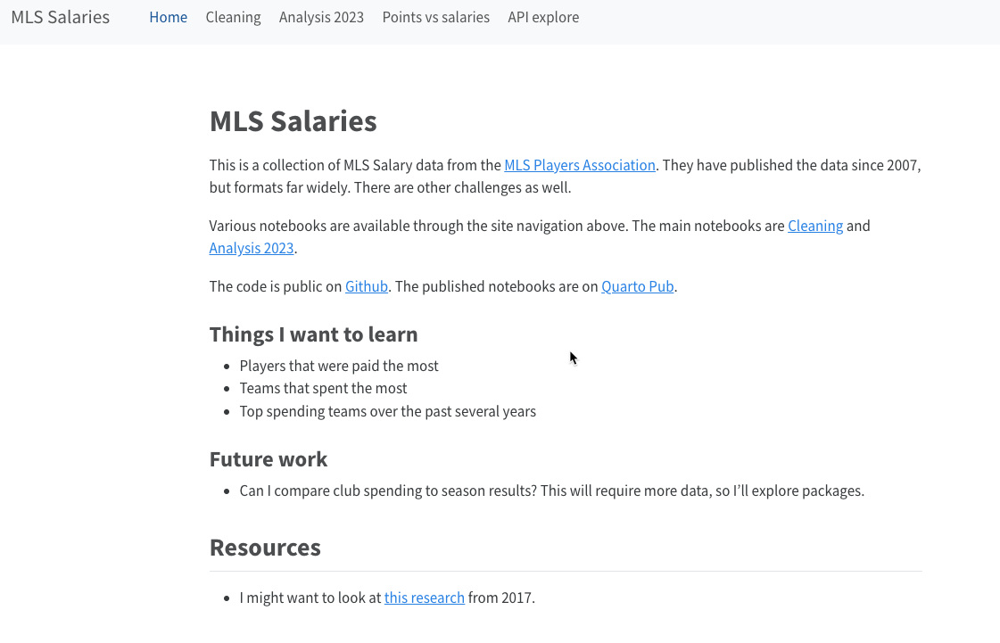

4 Documenting your work
“In every project you have at least one other collaborator: future-you. You don’t want future-you to curse past-you”
– Hadley Wickham via Roel M. Hogervorst
There are many reasons to fully document all of your data reporting, from the time you start seeking FOIAs to the time you publish your story and beyond. But future-you will be most grateful if you get in the habit of documenting your work as you go along.
Most projects happen in fits and starts. Sometimes you abandon a dataset just to come back to it later. Other times news gets in the way. No matter the reason, you will probably forget all of the details of your work – even where you stored it! – after just a few days. The good habits you get into now will save you hours and days of work later.
No matter what, your analysis and the way it’s characterized in publication must be demonstrably accurate. That means knowing exactly what you did, why, where you’ve put it, and how it should be communicated to a general audience. If you can’t describe your methods, the story simply can’t be be published. I have seen instances in which weeks of work had to be repeated or discarded because the reporter couldn’t identify the source or how they worked with it.
As Hadley Wickham said, you don’t want your future self to curse your current self – write good documentation that you can read and follow after you’ve long forgotten what you did today.
4.1 Scripted journalism

Christian McDonald at the University of Texas has described “scripted journalism” as data reporting that is “repeatable, transparent and annotated”.
We will be accomplishing those goals through the use of Quarto documents, which combine writing with analysis and results. By the end of this book, you will know how to produce a site like McDonald’s Major League Soccer analysis on your own as a way to document your work.
Some news organizations and editors talk instead about the “data diary”. It’s the same idea, but accomplished by keeping the journalism equivalent of the lab notebooks common in the sciences. Sometimes you’ll do work that doesn’t fit into the scripted journalism idea, such as a quick spreadsheet sort or some hand-cleaning of data. When you do that, be sure to keep a running list of all of the steps you took. Unlike programming languages, there’s no reminder of your mouse clicks.
I generally work on two levels: For stories, I have a Google or other document that lists all of the datasets I’ve attempted to use to answer my questions, where I tried to get them, and what experts I interview say about them. I also list stories and studies that used the data in these documents. But I almost exclusively work in programming languages to test, clean and analyze data. And to the extent possible, I try to share any results using Quarto documents so that I always know everyone is working from the same version.
Think of the data work the same way you think about interview notes or transcripts and any other research for a story. You wouldn’t quote a court case without reading it and probably talking to some of the participants. You’d make sure you know where to find the documents and what people say about them. You will consult those documents during your fact-checking. All data work – even the most short-lived – should be documented in at least the same detail. Ideally, someone reading through your notes would be able to repeat your work and understand what it means.
4.2 Elements of your documentation
You may not document all of these for smaller stories, but try to keep track of as many of these elements as possible.
Data sourcing
Make sure to write out, in detail, where you got your data and any material you reviewed about it. This includes:
The source of YOUR data, and how you know it’s authentic. Be specific. Don’t pretend you got it from the original source when you found it elsewhere, such as in this textbook or in a Github repository.
Describe the ORIGINAL source of the data and how it is collected and released.1
Take notes on other stories and studies that use this or similar data. Include interview notes, advice, warnings and findings along with stories that have already been done.
Identify alternative sources for this and similar or related datasets or documents.
Specifically write down where you have stored all of this and how you have organized your work. You want to make sure you can get back to the latest version easily, and that you have all of the supporting documents you need to check it.
Data documentation and flaws
I usually put the details of data documentation in a data cleaning Quarto document, which includes the code and the links to my files in one place. But no matter where you do it:
Include links or copies of any original documentation such as a record layout, data dictionary2 or manual. If there isn’t one, consider making a data dictionary with what you’ve learned.
Document the ways you checked the integrity of the data. There are many ways it might be inaccurate. Try to reconcile the number of rows and any totals you can produce to match other reports created by the source, or other reports that have used it. On longer stories, you’ll also check for impossible combinations (10-year-olds with DUIs), missing data and invalid data such as corrupted date columns.
Record any questions (and answers as you get them) about the meaning of fields or the scope of the data.
Document decisions you’ve made about the scope or method of your analysis. For example, if you want to look at “serious” crimes, describe how and why you categorized each crime as “serious” or “not serious.” Some of these should be vetted by experts or should be verified by documenting industry standards. You might note whether you’ve agreed as a team on these decisions, and when.
Include a list of interviews conducted / questions asked of officials and what they said.
Processing notes
Some projects require many steps to get to a dataset that can be analyzed. You may have had to scrape the data, combine it with other sources or fix some entries. Some common elements you should document:
Hand-made corrections. Try to list every one, but it’s ok if you describe HOW you did it, such as clustering and hand-entering using OpenRefine. Link to any spreadsheet, document or program you used. Just be sure to always work on a copy of the data.
Geocoding (affixing geographic coordinates to addresses). Note how many were correct, how many missing, and what you did about it.
A description of how you got messy data into a tabular form or a form suitable for analysis. For example, you may have had to strip headings or flip a spreadsheet on its head. Make sure to write down how you did that if it’s not in a program that can be easily replicated.
The good part: Your analysis
Each question you asked of your data, and the steps you took to answer it. If you use programming notebooks, write it out in plain language before or after the query or statements.
Vetting of your answers: who has looked them over, commented on them
Why they might be wrong!
4.3 Further reading
Data cleaning will come up a lot in the future, but it’s closely intertwined with documenting your work. Here’s an email exchange between me and Craig Silverman, now at ProPublica, about the process I used at The New York Times in reporting and fact-checking. This isn’t the same as a process for replication, but it discusses the kinds of things that should be in it.
If you want to see a project with a lot of data sources and how they might be documented in your notes, take a look at the New York City housing data sources we considered for a project in 2016.↩︎
A data dictionary lists every table and column in the database, along with definitions. It may be very straightfoward but can become quite complex.↩︎